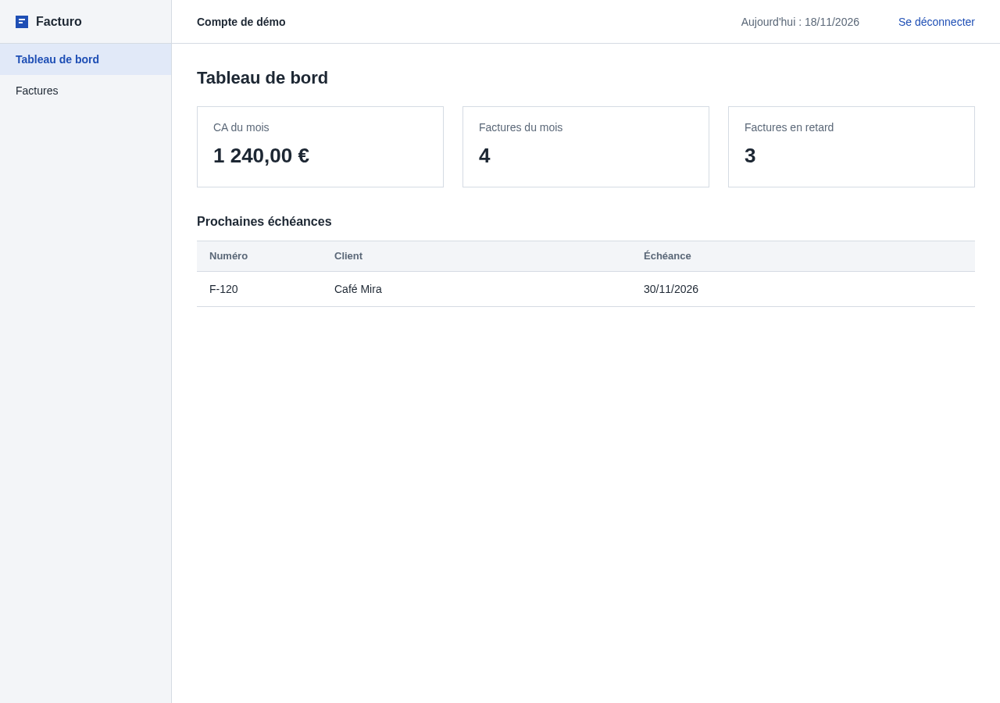
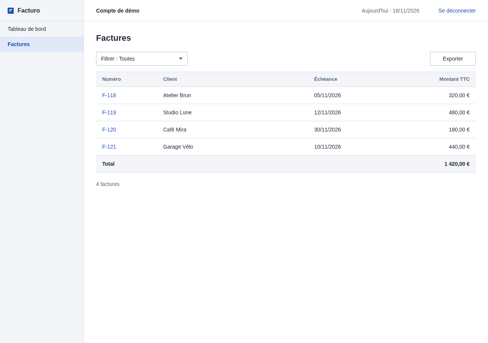
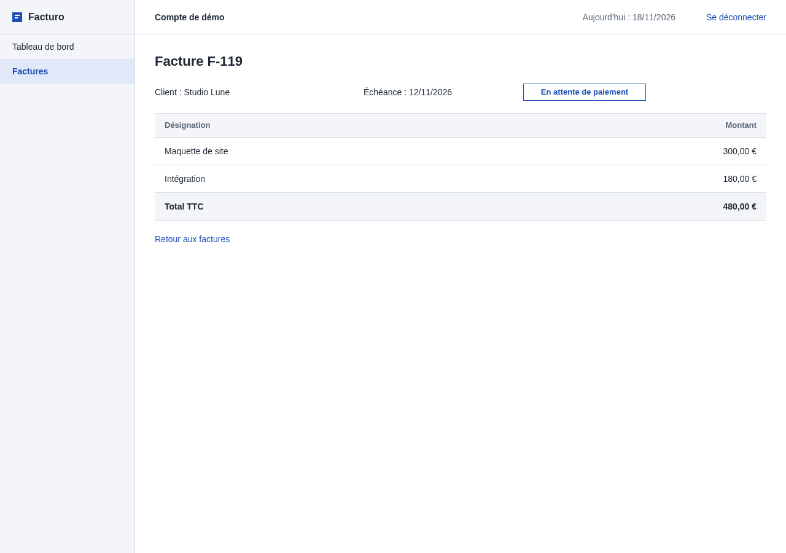
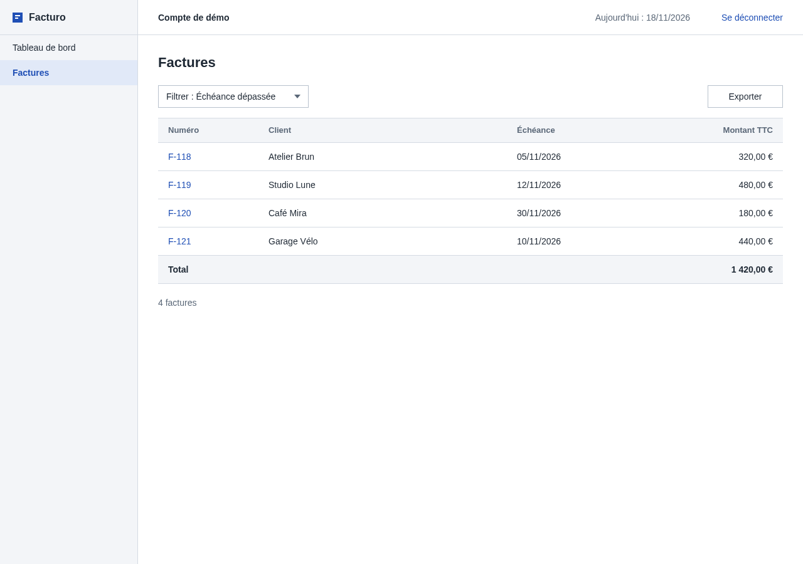

ca-du-mois-egal-total
termineÉcrans relevés : tableau-de-bord, liste-des-factures
Session : simulation-2026-11-16-23h15-9c0a
4 étapes · 2.848 s · coût inconnu
Facturo v13 · 2026-11-16-23h15-9c0a
Début : 2026-11-16T23:15:36.162+00:00 · Fin : 2026-11-16T23:15:39.01+00:00. Données lues depuis les lignes Supabase locales ; images copiées dans cette planche statique.
Écrans relevés : tableau-de-bord, liste-des-factures
Session : simulation-2026-11-16-23h15-9c0a
4 étapes · 2.848 s · coût inconnu
Écrans relevés : liste-des-factures, detail-facture
Session : simulation-2026-11-16-23h15-9c0a
4 étapes · 2.848 s · coût inconnu
Écrans relevés : liste-des-factures
Session : simulation-2026-11-16-23h15-9c0a
4 étapes · 2.848 s · coût inconnu
Cliquez sur une capture pour l'ouvrir à sa taille d'origine. Un relevé partagé appartient au premier test qui le demande.
ca-du-mois-egal-total
https://facturo-demo.vercel.app/v13/tableau-de-bordFacturo Tableau de bord Factures Compte de démo Aujourd'hui : 18/11/2026 Se déconnecter Tableau de bord CA du mois 1 240,00 € Factures du mois 4 Factures en retard 3 Prochaines échéances Numéro Client Échéance F-120 Café Mira 30/11/2026
ca-du-mois-egal-total
https://facturo-demo.vercel.app/v13/facturesFacturo Tableau de bord Factures Compte de démo Aujourd'hui : 18/11/2026 Se déconnecter Factures Filtrer : Toutes Exporter Numéro Client Échéance Montant TTC F-118 Atelier Brun 05/11/2026 320,00 € F-119 Studio Lune 12/11/2026 480,00 € F-120 Café Mira 30/11/2026 180,00 € F-121 Garage Vélo 10/11/2026 440,00 € Total 1 420,00 € 4 factures
detail-facture-total-egal-liste
https://facturo-demo.vercel.app/v13/factures/F-119Facturo Tableau de bord Factures Compte de démo Aujourd'hui : 18/11/2026 Se déconnecter Facture F-119 Client : Studio Lune Échéance : 12/11/2026 En attente de paiement Désignation Montant Maquette de site 300,00 € Intégration 180,00 € Total TTC 480,00 € Retour aux factures
liste-factures-filtre-echeance
https://facturo-demo.vercel.app/v13/factures?filtre=echeance-depasseeFacturo Tableau de bord Factures Compte de démo Aujourd'hui : 18/11/2026 Se déconnecter Factures Filtrer : Échéance dépassée Exporter Numéro Client Échéance Montant TTC F-118 Atelier Brun 05/11/2026 320,00 € F-119 Studio Lune 12/11/2026 480,00 € F-120 Café Mira 30/11/2026 180,00 € F-121 Garage Vélo 10/11/2026 440,00 € Total 1 420,00 € 4 factures
| Heure (UTC) | Étape | Action | Test / état session |
|---|---|---|---|
| 1 | Ouvre « tableau-de-bord » (defaut) | ca-du-mois-egal-totalen_cours | |
| 2 | Ouvre « liste-des-factures » (defaut) | ca-du-mois-egal-totalen_cours | |
| 3 | Ouvre « detail-facture » (defaut) | detail-facture-total-egal-listeen_cours | |
| 4 | Ouvre « liste-des-factures » (filtre-echeance) | liste-factures-filtre-echeanceen_cours |